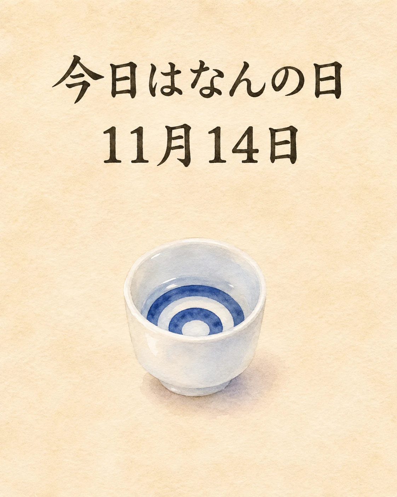

11月14日は「唎酒師の日」です🍶
1991年11月14日に、第1回唎酒師認定試験が行われたことにちなむ日。2026年は、その試験から35周年を迎えます。
日本酒の香りや味わいを知り、料理との組み合わせを考える。唎酒師は、そんな一杯の楽しみを伝える案内役です。出汁のうま味や季節の素材に寄り添うお酒を選ぶことも、和食を味わう楽しみのひとつですね。
季節の味わいとともに、心ほどけるひとときをお過ごしください✨
一杯の魅力を、料理とともに
日本酒サービス研究会（SSI）の2026年の案内で、名称・11月14日の日付と第1回認定試験にちなむ由来を確認しました。2026年11月14日は土曜日です。資格取得者が営むきたの酒店の2022年11月14日の記事にも、同じ日付と由来の記載があります。
SSIは唎酒師の仕事の例として、飲食店での料理との組み合わせや、温度・酒器による楽しみ方の提案を挙げています。和食と日本酒をともに味わう当店の季節日記として、一杯を選ぶ楽しみに目を向けました。
この記事は記念日と日本酒文化の紹介です。SSIの2026年の発信企画への当店の応募・参加や、当日の催事・特典・特定銘柄の入荷を示すものではありません。
出典：日本酒サービス研究会（SSI）「唎酒師のお仕事 発信プロジェクト2026｜11月14日は唎酒師の日」（2026年10月19日）、きたの酒店・2022年11月14日の記事（2026年11月14日確認）。